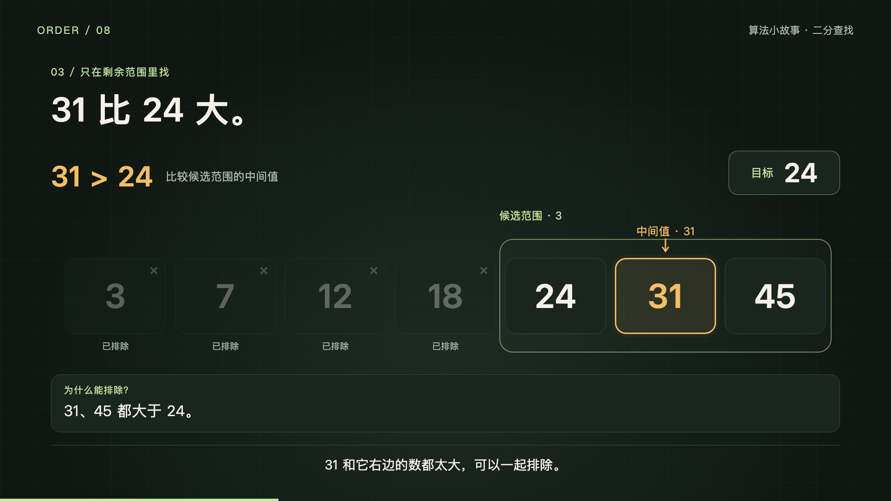

你好，我是俊权。
我的工作主要围绕学习设计、内容开发、数据分析和 AI 展开。我喜欢把复杂的事情理清楚，也喜欢琢磨更高效的工作方式。
此前，我在 VIPKid、字节跳动和 LeetCode 设计学习体验、开发学习内容。最近，我花了很多时间探索如何设计和开发基于 AI 智能体的工作流，并在工作和个人项目中实践。
学习
| 学习资源 | 我的笔记 |
|---|---|
|
Stanford CS329Z · Engineering AI Agents
斯坦福的 AI 智能体工程课程，介绍如何构建、评估和优化智能体系统，涵盖 RAG、工具调用与工作流设计。 |
笔记
课程内容的文字整理 |
|
Stanford CS193T · Thinking with AI
斯坦福的 AI 实践课程，涵盖提示词设计、智能体工作流、模型评估，以及 AI 使用中的批判性思考。 计划在学完 Engineering AI Agents 后学习。 |